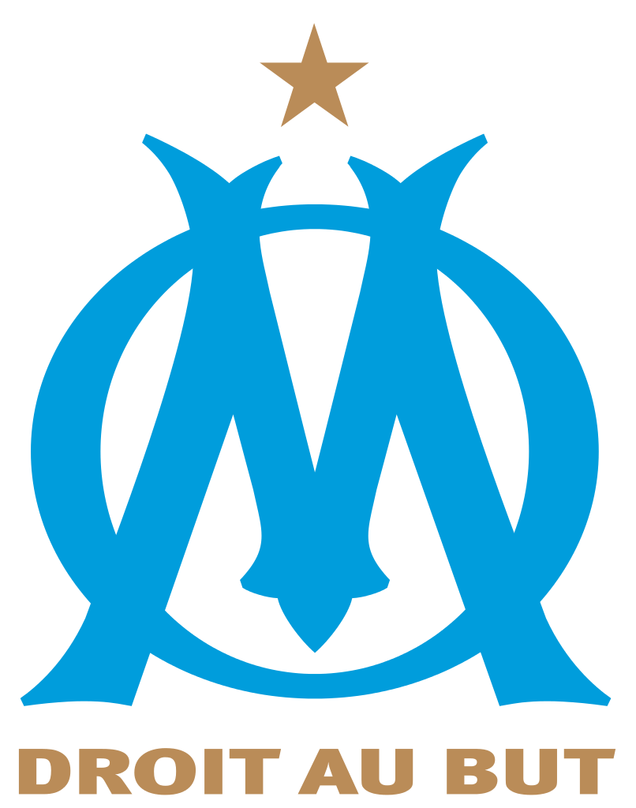

Présentation
Natif de la cité phocéenne
:
Né le 11 Août 2000, titulaire d'un baccalauréat économqiue et social, passionné par le foot et surtout par l', les jeux-vidéos, grand fan de Kev Adams (<3 sur lui), son meilleur film est Alad'2 et de l'Amour et dans le pré
J'ai de la chance d'être footballeur professionnel entre deux lignes de codage, (cf) blablablablablabla........
Retour